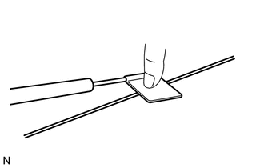
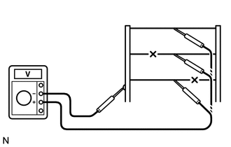
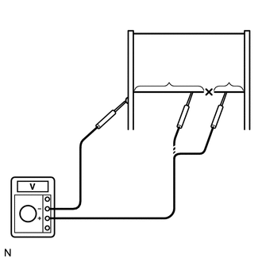

RM3140CG
_59
车辆外饰
_024015
车窗/玻璃
_0116250
车窗除雾器加热丝
G
车窗/玻璃 车窗除雾器加热丝 车上检查
程序

 1.检查后窗除雾器的工作情况
1.检查后窗除雾器的工作情况
a.
点火开关置于 ON 位置且按下后窗除雾器开关时，检查并确认车窗除雾器系统工作。
2.检查背窗玻璃（后窗除雾器加热丝）
- 备注：
- ·
清洁玻璃时，用柔软干燥的布沿加热丝擦拭玻璃。小心不要损坏引线。
·不要使用含有研磨成分的去垢剂或者玻璃清洁剂。
·如图所示，测量电压时，用一张锡箔缠绕检测仪负极探针的探头，然后再用手指将锡箔按压在加热丝上。
a.

1.938,1.333 1.833,1.688
false
0.448,1.115 0.448,0.5
0.448,0.5 0.573,0.5
false
2.75,0.875 2.75,1.26
false
2.688,1.281 2.865,1.469
0.177,0.188
10
false
*1
1.74,1.688 1.948,1.896
0.208,0.208
10
false
*b
0.615,0.417 0.813,0.615
0.198,0.198
10
false
*a
| *1 | 后窗除雾器加热丝 |
| *a | 检测仪探针 |
| *b | 锡箔 |
将点火开关置于 ON 位置。
b.
打开后窗除雾器开关。
c.

1.844,1.271 1.573,0.625
1.573,0.625 1.354,0.625
false
2.406,0.083 2.594,0.281
0.188,0.198
10
*b
1.146,0.542 1.323,0.688
0.177,0.146
10
*a
| *a | 金属条 |
| *b | 加热丝的中部 |
如图所示，在后窗除雾器各加热丝的中部测量电压以检查加热丝。
- 结果:
电压 标准 4 至 6 V 加热丝没有断裂 11 至 14 V 加热丝中部和接地侧的加热丝端部之间断裂 低于 1 V 加热丝中部和蓄电池侧的加热丝端部之间断裂
- 提示：
-
如果电压为 11 至 14 V，则加热丝中部和接地侧的加热丝端部之间可能破损。如果电压低于 1 V，则加热丝中部和蓄电池侧的加热丝端部之间可能破损。
d.

1.656,1.271 1.448,0.958
1.448,0.958 1.188,0.958
false
2.219,1.219 2.219,3.094
false
3.188,1.5 2.979,1.5
2.979,1.5 2.979,2.135
false
2.208,1.073 2.208,0.604
2.208,0.604 1.521,0.604
false
3,1.073 3,0.115
3,0.115 2.854,0.115
false
1.667,1.521 1.469,1.667
1.469,1.667 1.469,2.052
false
1.021,0.885 1.219,1.073
0.198,0.188
10
false
*e
2.167,3.146 2.344,3.333
0.177,0.188
10
false
*f
1.396,2.073 1.594,2.271
0.198,0.198
10
false
*c
2.896,2.156 3.073,2.354
0.177,0.198
10
false
*d
2.688,0.042 2.844,0.188
0.156,0.146
10
false
*a
1.344,0.552 1.5,0.698
0.156,0.146
10
false
*b
| *a | 11 至 14 V |
| *b | 低于 1 V |
| *c | 接地侧 |
| *d | 蓄电池侧 |
| *e | 金属条 |
| *f | 断裂的加热丝 |
将电压表正极 (+) 引线连接到蓄电池侧的后窗除雾器加热丝上。
e.
将带金属条的电压表负极 (-) 引线连接到接地侧的加热丝上。
f.
将正极 (+) 引线从蓄电池侧滑动到接地侧。电压从 11 至 14 V 降到 1 V 以下处即为后窗除雾器加热丝断裂处。
- 提示：
-
如果后窗除雾器加热丝未断裂，则蓄电池侧的电压表应显示 11 至 14 V。正极 (+) 引线移动到接地侧时，电压逐渐降至低于 1 V。